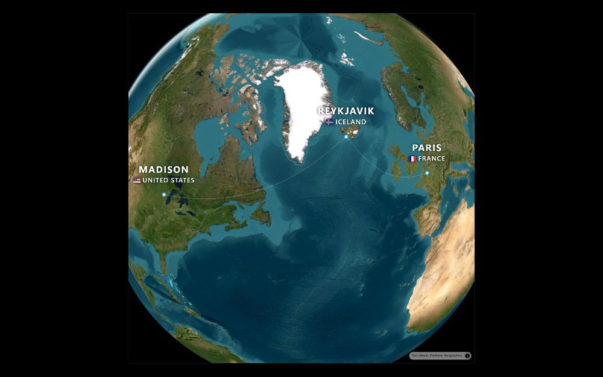
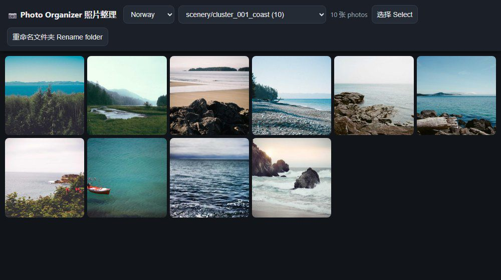
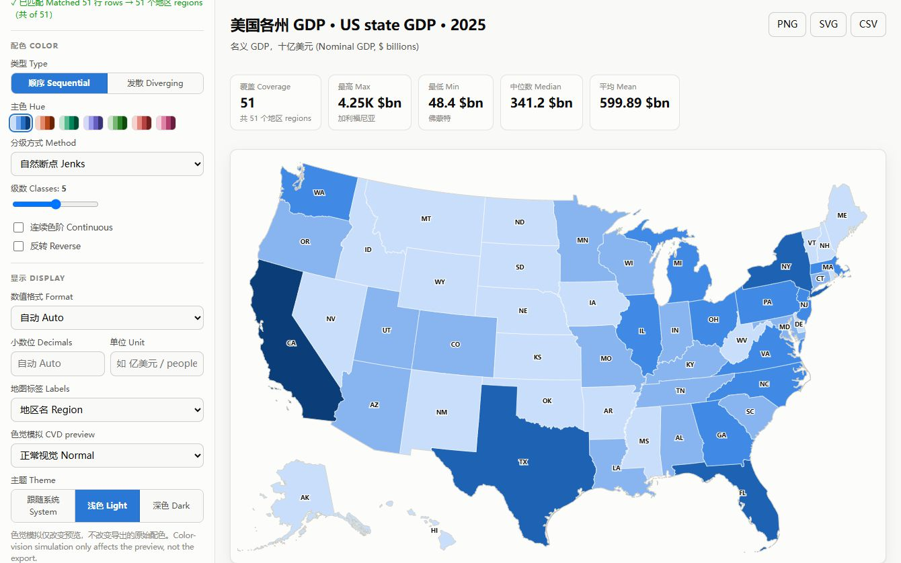
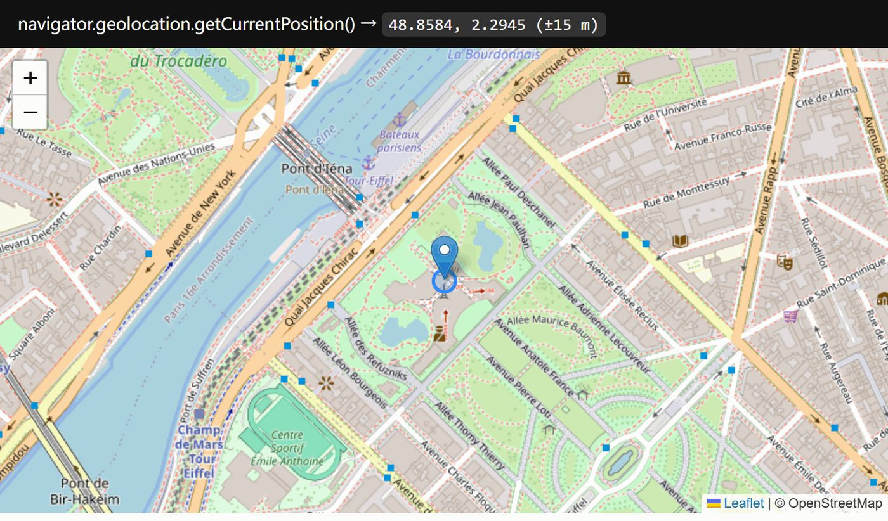
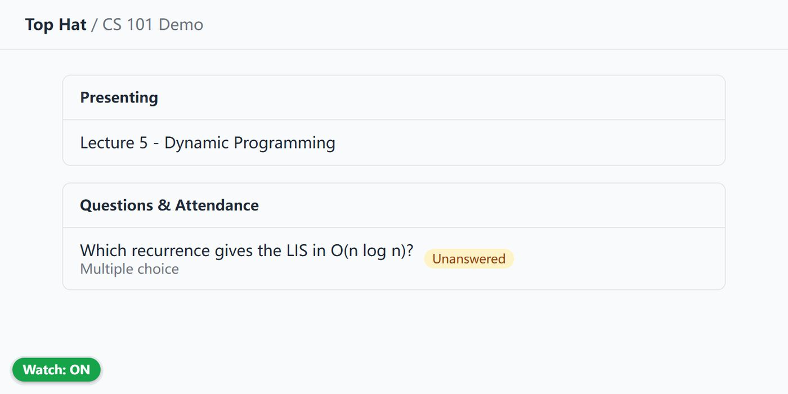

Work
Built end to end, all still running.

The paid route-video makers want an account, a watermark and an export limit. This one is a single HTML file.
MapLibre GL, Canvas 2D, in-browser video capture
- Flies a vehicle along a multi-stop route over a satellite globe and records it with MediaRecorder. No server ever sees the clip.
- Every vehicle is drawn top-down on canvas, because emoji are three-quarter views and read wrong from directly overhead.
- Altitude follows leg-local time rather than distance; keying it to distance let the climb eat a third of the flight.
Every UW–Madison course, linked to the grade history and instructor ratings students actually check before enrolling.
Static site, zero dependencies, GitHub Pages
- Resolves any course to its MadGrades GPA distribution and Rate My Professors page in one query.
- Seeded with anonymized course-mention counts mined from a student chat archive. Aggregates ship; records never do.
- No backend to keep alive: flat JSON, served from a CDN edge, loads instantly on a phone.

Sorts a 310 GB travel photo library into people, scenery, and per-trip clusters, entirely on a local GPU. Nothing is uploaded.
CLIP ViT-B/32, HDBSCAN, PyTorch with CUDA, FastAPI. 7,346 files, 0 errors.
- Zero-shot classifies people vs. scenery, then clusters scenery by embedding into trip-scale groups per region.
- RAW and XMP sidecars follow their JPEG through every move; the source tree is copy-only and never mutated.
- Embedding cache keyed by path + size + mtime, so a rerun over 7k files costs minutes instead of hours.
- Local FastAPI web UI for browsing, renaming, and re-filing, reachable from a phone over LAN.

Paste a column of numbers, get a choropleth whose color scale you can defend in a code review.
OKLCH ramps, quantile breaks, no dependencies, Playwright tests
- Sequential ramps are generated in OKLCH from a reference lightness/chroma trajectory with the hue swapped, so perceptual monotonicity is structural, not eyeballed after the fact.
- Diverging scales default to symmetric quantile breaks; equal-interval was tried first and collapsed real county data into a single neutral class.
- Ships with a rebuild pipeline that re-fetches World Bank, Census, and ISO-3166 sources and regenerates every dataset.
Smaller tools

Chrome extension that answers the Geolocation API with a point you pick on a map. Patched calls still pass native-type checks.

Chrome extension that sends a desktop and phone alert the moment a Top Hat question or attendance check opens.